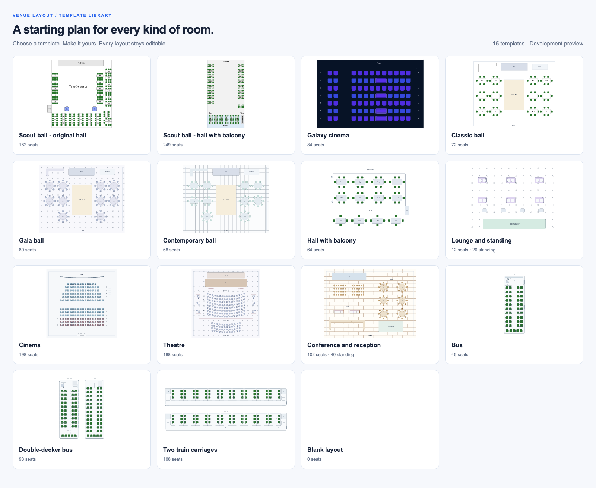

01 / EDITOR
Place and customize a table
Drag a table onto the plan, animate its chairs and try a round shape.
6 connected chapters show the real gestures: place and reshape tables, copy and style a row, paint custom seating, build curved rows, then choose tickets on mobile.

Drag a table onto the plan, animate its chairs and try a round shape.
Hold Ctrl to drag out copies, then select the row and apply one appearance.
Paint a custom outline, then click to add each chair around its perimeter.
Drop curved seating in the center, adjust rows and columns, then try the viewer.
Drag in a ready-made bus and give its seats a coordinated transport appearance.
Explore the plan, choose your places and review the total on your phone.
The same chapters in one cut. The README uses the individual GIFs.
Additional editor, viewer and theme examples. Dark mode remains separate from the main workflow.
Drag a table onto the plan, animate its chairs and try a round shape.
Hold Ctrl to drag out copies, then select the row and apply one appearance.
Paint a custom outline, then click to add each chair around its perimeter.
Drop curved seating in the center, adjust rows and columns, then try the viewer.
Drag in a ready-made bus and give its seats a coordinated transport appearance.
Explore the plan, choose your places and review the total on your phone.